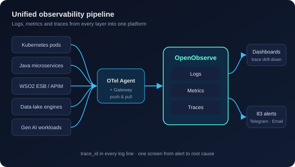
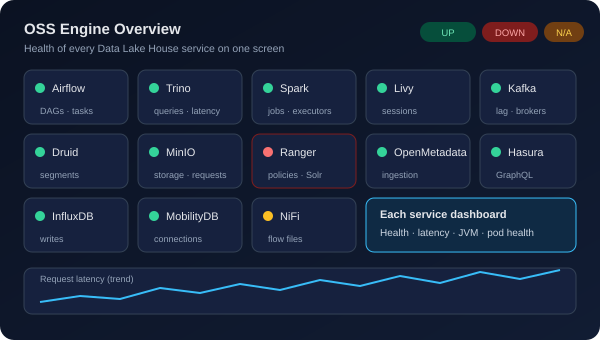
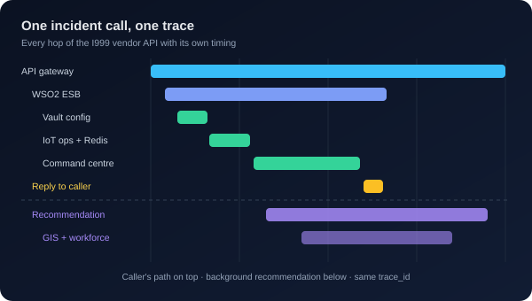
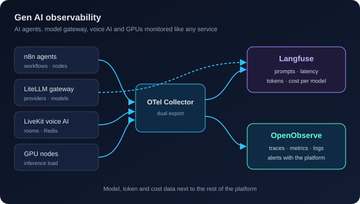
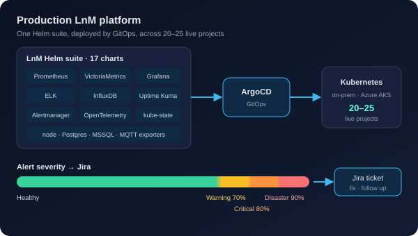

Certifications

AZ-900 Azure Fundamentals
DevOps Engineer Internship
IBM with StarAgile · 2024NCC "C" Certificate
Cadet Under Officer · 2019Click the Azure badge to view and verify the certificate
Hello, I’m
Skills:
I work in the Technical Assistance Center at Trinity Mobility, where I own logging and monitoring for 20–25 live smart-city and IoT projects and fix problems at the warning stage, before they reach production users. I am currently leading R&D to bring logs, metrics and traces for the whole platform into one place with OpenObserve and OpenTelemetry, including Gen AI workloads.
Download CV Contact MeYears in DevOps & Observability
Production Projects Monitored
DLH Service Dashboards Built
Real-time Alerts Designed
End-to-end install and build on Kubernetes: logs, metrics and traces in one place, with alert pipelines and dashboards.
Agent and gateway collectors, OTLP logs, distributed tracing and trace–log correlation for Java, WSO2 ESB/APIM, NiFi and data-lake services.
Service-health dashboards for the Data Lake House, microservices (JVM, Python), Airflow, ports, pods, nodes and databases.
Prometheus, VictoriaMetrics, node, kube-state, JMX, Actuator, Kafka, Postgres, MSSQL and MQTT exporters.
Filebeat → Logstash → Elasticsearch → Kibana. Centralised, searchable production logs with API and ESB analytics.
Warning 70%, Critical 80% and Disaster 90%+ severities, routed to Telegram, email and Jira so issues are fixed before they hit the SLO.
On-prem and Azure AKS clusters running the monitoring services, with ArgoCD (GitOps) deployments.
NVIDIA GPU monitoring, LiveKit voice AI call quality, Langfuse, LiteLLM and n8n agent tracing with model, token and cost tracking.
Reverse proxy, load balancing, ingress and day-to-day Linux operations.

An R&D build of a complete OpenObserve stack, so every production issue can be investigated in one place.
Impact: one screen for logs, metrics and traces across the platform

The OSS Engine Overview plus 13 per-service Grafana dashboards for the Data Lake House.
Impact: health of the whole data platform on a single screen

Full distributed trace of the I999 emergency-incident API call.
Impact: every hop of a critical vendor call is visible and measurable

Brought AI workloads into the same observability platform.
Impact: AI agents monitored like any other production service

Logging and monitoring for 20–25 go-live smart-city and IoT projects.
Impact: issues fixed at warning level, before they affect the SLO
AZ-900 Azure Fundamentals
DevOps Engineer Internship
IBM with StarAgile · 2024NCC "C" Certificate
Cadet Under Officer · 2019Click the Azure badge to view and verify the certificate